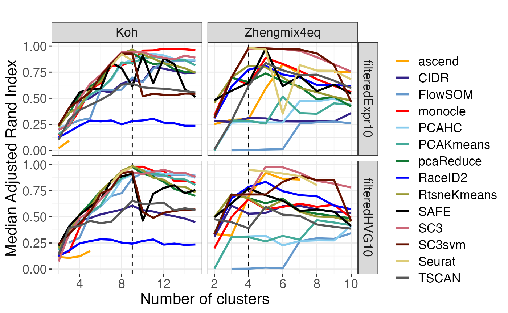

Plot performance summaries
Angelo Duò
Mark D Robinson
Charlotte Soneson
2022-10-21
plot_performance.RmdIntroduction
In this vignette we describe the basic usage of the DuoClustering2018 package: how to retrieve data sets and clustering results, and how to construct various plots summarizing the performance of different methods across several data sets.
Load the necessary packages
suppressPackageStartupMessages({
library(ExperimentHub)
library(SingleCellExperiment)
library(DuoClustering2018)
library(plyr)
})## snapshotDate(): 2022-10-17Retrieve a data set
The clustering evaluation (Duò, Robinson, and Soneson 2018) is based on 12 data sets (9 real and 3 simulated), which are all provided via ExperimentHub and retrievable via this package. We include the full data sets (after quality filtering of cells and removal of genes with zero counts across all cells) as well as three filtered versions of each data set (by expression, variability and dropout pattern, respectively), each containing 10% of the genes in the full data set.
To get an overview, we can list all records from this package that are available in ExperimentHub:
eh <- ExperimentHub()## snapshotDate(): 2022-10-17
query(eh, "DuoClustering2018")## ExperimentHub with 122 records
## # snapshotDate(): 2022-10-17
## # $dataprovider: Robinson group (UZH), 10x Genomics, Zheng et al (2017), SRA...
## # $species: Homo sapiens, Mus musculus, NA
## # $rdataclass: data.frame, SingleCellExperiment, list
## # additional mcols(): taxonomyid, genome, description,
## # coordinate_1_based, maintainer, rdatadateadded, preparerclass, tags,
## # rdatapath, sourceurl, sourcetype
## # retrieve records with, e.g., 'object[["EH1499"]]'
##
## title
## EH1499 | duo_clustering_all_parameter_settings_v1
## EH1500 | sce_full_Koh
## EH1501 | sce_filteredExpr10_Koh
## EH1502 | sce_filteredHVG10_Koh
## EH1503 | sce_filteredM3Drop10_Koh
## ... ...
## EH1651 | clustering_summary_filteredHVG10_SimKumar4hard_v2
## EH1652 | clustering_summary_filteredM3Drop10_SimKumar4hard_v2
## EH1653 | clustering_summary_filteredExpr10_SimKumar8hard_v2
## EH1654 | clustering_summary_filteredHVG10_SimKumar8hard_v2
## EH1655 | clustering_summary_filteredM3Drop10_SimKumar8hard_v2The records with names starting in sce_ represent (filtered or unfiltered) data sets (in SingleCellExperiment format). The records with names starting in clustering_summary_ correspond to data.frame objects with clustering results for each of the filtered data sets. Finally, the duo_clustering_all_parameter_settings object contains the parameter settings we used for all the clustering methods. For clustering summaries and parameter settings, the version number (e.g., _v2) corresponds to the version of the publication.
The records can be retrieved using their ExperimentHub ID, e.g.:
eh[["EH1500"]]## see ?DuoClustering2018 and browseVignettes('DuoClustering2018') for documentation## loading from cache## class: SingleCellExperiment
## dim: 48981 531
## metadata(1): log.exprs.offset
## assays(3): counts logcounts normcounts
## rownames(48981): ENSG00000000003.14 ENSG00000000005.5 ...
## ENSG00000283122.1 ENSG00000283124.1
## rowData names(8): is_feature_control mean_counts ... total_counts
## log10_total_counts
## colnames(531): SRR3952323 SRR3952325 ... SRR3952970 SRR3952971
## colData names(15): Run LibraryName ... feature.drop sizeFactor
## reducedDimNames(2): PCA TSNE
## mainExpName: NULL
## altExpNames(0):Alternatively, the shortcut functions provided by this package can be used:
## see ?DuoClustering2018 and browseVignettes('DuoClustering2018') for documentation## loading from cache## class: SingleCellExperiment
## dim: 4898 531
## metadata(1): log.exprs.offset
## assays(3): counts logcounts normcounts
## rownames(4898): ENSG00000198804.2 ENSG00000210082.2 ...
## ENSG00000072134.15 ENSG00000090061.17
## rowData names(8): is_feature_control mean_counts ... total_counts
## log10_total_counts
## colnames(531): SRR3952323 SRR3952325 ... SRR3952970 SRR3952971
## colData names(15): Run LibraryName ... is_cell_control sizeFactor
## reducedDimNames(2): PCA TSNE
## mainExpName: NULL
## altExpNames(0):Read a set of clustering results
For each included data set, we have applied a range of clustering methods (see the run_clustering vignette for more details on how this was done, and how to apply additional methods). As mentioned above, the results of these clusterings are also available from ExperimentHub, and can be loaded either by their ExperimentHub ID or using the provided shortcut functions, as above. For simplicity, the results of all methods for a given data set are combined into a single object. As an illustration, we load the clustering summaries for two different data sets (Koh and Zhengmix4eq), each with two different gene filterings (Expr10 and HVG10):
res <- plyr::rbind.fill(
clustering_summary_filteredExpr10_Koh_v2(),
clustering_summary_filteredHVG10_Koh_v2(),
clustering_summary_filteredExpr10_Zhengmix4eq_v2(),
clustering_summary_filteredHVG10_Zhengmix4eq_v2()
)## see ?DuoClustering2018 and browseVignettes('DuoClustering2018') for documentation## loading from cache## see ?DuoClustering2018 and browseVignettes('DuoClustering2018') for documentation## loading from cache## see ?DuoClustering2018 and browseVignettes('DuoClustering2018') for documentation## loading from cache## see ?DuoClustering2018 and browseVignettes('DuoClustering2018') for documentation## loading from cache
dim(res)## [1] 5625885 10The resulting data.frame contains 10 columns:
-
dataset: The name of the data set -
method: The name of the clustering method -
cell: The cell identifier -
run: The run ID (each method was run five times for each data set and number of clusters) -
k: The imposed number of clusters (for all methods except Seurat) -
resolution: The imposed resolution (only for Seurat) -
cluster: The assigned cluster label -
trueclass: The true class of the cell -
est_k: The estimated number of clusters (for methods allowing such estimation) -
elapsed: The elapsed time of the run
head(res)## dataset method cell run k resolution cluster
## 1 sce_filteredExpr10_Koh PCAKmeans SRR3952323 1 2 NA 1
## 2 sce_filteredExpr10_Koh PCAKmeans SRR3952325 1 2 NA 1
## 3 sce_filteredExpr10_Koh PCAKmeans SRR3952326 1 2 NA 1
## 4 sce_filteredExpr10_Koh PCAKmeans SRR3952327 1 2 NA 1
## 5 sce_filteredExpr10_Koh PCAKmeans SRR3952328 1 2 NA 1
## 6 sce_filteredExpr10_Koh PCAKmeans SRR3952329 1 2 NA 1
## trueclass est_k elapsed
## 1 H7hESC NA 14.318
## 2 H7hESC NA 14.318
## 3 H7hESC NA 14.318
## 4 H7hESC NA 14.318
## 5 H7hESC NA 14.318
## 6 H7hESC NA 14.318Define consistent method colors
For some of the plots generated below, the points will be colored according to the clustering method. We can enforce a consistent set of colors for the methods by defining a named vector of colors to use for all plots.
method_colors <- c(CIDR = "#332288", FlowSOM = "#6699CC", PCAHC = "#88CCEE",
PCAKmeans = "#44AA99", pcaReduce = "#117733",
RtsneKmeans = "#999933", Seurat = "#DDCC77", SC3svm = "#661100",
SC3 = "#CC6677", TSCAN = "grey34", ascend = "orange", SAFE = "black",
monocle = "red", RaceID2 = "blue")Plot
Each plotting function described below returns a list of ggplot objects. These can be plotted directly, or further modified if desired.
Performance
The plot_performance() function generates plots related to the performance of the clustering methods. We quantify performance using the adjusted Rand Index (ARI) (Hubert and Arabie 1985), comparing the obtained clustering to the true clusters. As we noted in the publication (Duò, Robinson, and Soneson 2018), defining a true partitioning of the cells is difficult, since they can often be grouped together in several different, but still interpretable, ways. We refer to our paper for more information on how the true clusters were defined for each of the data sets.
perf <- plot_performance(res, method_colors = method_colors)
names(perf)## [1] "median_ari_vs_k" "scatter_time_vs_ari_truek"
## [3] "median_ari_heatmap_truek" "median_ari_heatmap_bestk"
## [5] "median_ari_heatmap_estk"
perf$median_ari_vs_k## Warning: Removed 4 row(s) containing missing values (geom_path).
perf$median_ari_heatmap_truekStability
The plot_stability() function evaluates the stability of the clustering results from each method, with respect to random starts. Each method was run five times on each data set (for each k), and we quantify the stability by comparing each pair of such runs using the adjusted Rand Index.
stab <- plot_stability(res, method_colors = method_colors)## Aggregation function missing: defaulting to length
## Aggregation function missing: defaulting to length
## Aggregation function missing: defaulting to length
## Aggregation function missing: defaulting to length
## Aggregation function missing: defaulting to length
## Aggregation function missing: defaulting to length
## Aggregation function missing: defaulting to length
## Aggregation function missing: defaulting to length
## Aggregation function missing: defaulting to length
## Aggregation function missing: defaulting to length
## Aggregation function missing: defaulting to length
## Aggregation function missing: defaulting to length
## Aggregation function missing: defaulting to length
## Aggregation function missing: defaulting to length## Warning: `cols` is now required when using unnest().
## Please use `cols = c(stability)`
names(stab)## [1] "stability_vs_k" "stability_truek"
## [3] "stability_heatmap_truek"
stab$stability_vs_k## Warning: Removed 4 row(s) containing missing values (geom_path).
stab$stability_heatmap_truekEntropy
In order to evaluate the tendency of the clustering methods to favor equally sized clusters, we calculate the Shannon entropy (Shannon 1948) of each clustering solution (based on the proportions of cells in the different clusters) and plot this using the plot_entropy() function. Since the maximal entropy that can be obtained depends on the number of clusters, we use normalized entropies, defined by dividing the observed entropy by log2(k). We also compare the entropies for the clusterings to the entropy of the true partition for each data set.
entr <- plot_entropy(res, method_colors = method_colors)
names(entr)## [1] "entropy_vs_k" "entropy_vs_ari" "normentropy"
## [4] "deltaentropy_truek" "deltanormentropy_truek"
entr$entropy_vs_k
entr$normentropy
Timing
The plot_timing() function plots various aspects of the timing of the different methods.
timing <- plot_timing(res, method_colors = method_colors,
scaleMethod = "RtsneKmeans")
names(timing)## [1] "time_boxplot" "time_normalized_by_ref" "time_vs_k"
timing$time_normalized_by_ref## Warning: Removed 32 rows containing non-finite values (stat_boxplot).
Differences in k
Most performance evaluations above are performed on the clustering solutions obtained by imposing the “true” number of clusters. The plot_k_diff() function evaluates the difference between the true number of cluster and the number of clusters giving the best agreement with the true partition, as well as the difference between the estimated and the true number of clusters, for the methods that allow estimation of k.
kdiff <- plot_k_diff(res, method_colors = method_colors)
names(kdiff)## [1] "diff_kmax_ktrue" "diff_kest_ktrue"
kdiff$diff_kest_ktrue## Bin width defaults to 1/30 of the range of the data. Pick better value with `binwidth`.Session info
## R version 4.2.1 (2022-06-23)
## Platform: x86_64-apple-darwin17.0 (64-bit)
## Running under: macOS Big Sur ... 10.16
##
## Matrix products: default
## BLAS: /Library/Frameworks/R.framework/Versions/4.2/Resources/lib/libRblas.0.dylib
## LAPACK: /Library/Frameworks/R.framework/Versions/4.2/Resources/lib/libRlapack.dylib
##
## locale:
## [1] en_US.UTF-8/en_US.UTF-8/en_US.UTF-8/C/en_US.UTF-8/en_US.UTF-8
##
## attached base packages:
## [1] stats4 stats graphics grDevices utils datasets methods
## [8] base
##
## other attached packages:
## [1] plyr_1.8.7 DuoClustering2018_1.7.1
## [3] SingleCellExperiment_1.19.1 SummarizedExperiment_1.27.3
## [5] Biobase_2.57.1 GenomicRanges_1.49.1
## [7] GenomeInfoDb_1.33.13 IRanges_2.31.2
## [9] S4Vectors_0.35.4 MatrixGenerics_1.9.1
## [11] matrixStats_0.62.0 ExperimentHub_2.5.0
## [13] AnnotationHub_3.5.2 BiocFileCache_2.5.2
## [15] dbplyr_2.2.1 BiocGenerics_0.43.4
## [17] BiocStyle_2.25.0
##
## loaded via a namespace (and not attached):
## [1] bitops_1.0-7 fs_1.5.2
## [3] bit64_4.0.5 filelock_1.0.2
## [5] httr_1.4.4 rprojroot_2.0.3
## [7] tools_4.2.1 bslib_0.4.0
## [9] utf8_1.2.2 R6_2.5.1
## [11] DBI_1.1.3 colorspace_2.0-3
## [13] withr_2.5.0 gridExtra_2.3
## [15] tidyselect_1.2.0 bit_4.0.4
## [17] curl_4.3.3 compiler_4.2.1
## [19] textshaping_0.3.6 cli_3.4.1
## [21] desc_1.4.2 DelayedArray_0.23.2
## [23] labeling_0.4.2 bookdown_0.29
## [25] sass_0.4.2 scales_1.2.1
## [27] rappdirs_0.3.3 pkgdown_2.0.6.9000
## [29] systemfonts_1.0.4 stringr_1.4.1
## [31] digest_0.6.30 rmarkdown_2.17
## [33] XVector_0.37.1 pkgconfig_2.0.3
## [35] htmltools_0.5.3 highr_0.9
## [37] fastmap_1.1.0 ggthemes_4.2.4
## [39] rlang_1.0.6 RSQLite_2.2.18
## [41] shiny_1.7.2 farver_2.1.1
## [43] jquerylib_0.1.4 generics_0.1.3
## [45] jsonlite_1.8.2 mclust_5.4.10
## [47] dplyr_1.0.10 RCurl_1.98-1.9
## [49] magrittr_2.0.3 GenomeInfoDbData_1.2.9
## [51] Matrix_1.5-1 Rcpp_1.0.9
## [53] munsell_0.5.0 fansi_1.0.3
## [55] viridis_0.6.2 lifecycle_1.0.3
## [57] stringi_1.7.8 yaml_2.3.6
## [59] zlibbioc_1.43.0 grid_4.2.1
## [61] blob_1.2.3 promises_1.2.0.1
## [63] crayon_1.5.2 lattice_0.20-45
## [65] Biostrings_2.65.6 KEGGREST_1.37.3
## [67] knitr_1.40 pillar_1.8.1
## [69] reshape2_1.4.4 glue_1.6.2
## [71] BiocVersion_3.16.0 evaluate_0.17
## [73] BiocManager_1.30.18 png_0.1-7
## [75] vctrs_0.4.2 httpuv_1.6.6
## [77] tidyr_1.2.1 gtable_0.3.1
## [79] purrr_0.3.5 assertthat_0.2.1
## [81] cachem_1.0.6 ggplot2_3.3.6
## [83] xfun_0.34 mime_0.12
## [85] xtable_1.8-4 later_1.3.0
## [87] viridisLite_0.4.1 ragg_1.2.3
## [89] tibble_3.1.8 AnnotationDbi_1.59.1
## [91] memoise_2.0.1 ellipsis_0.3.2
## [93] interactiveDisplayBase_1.35.1